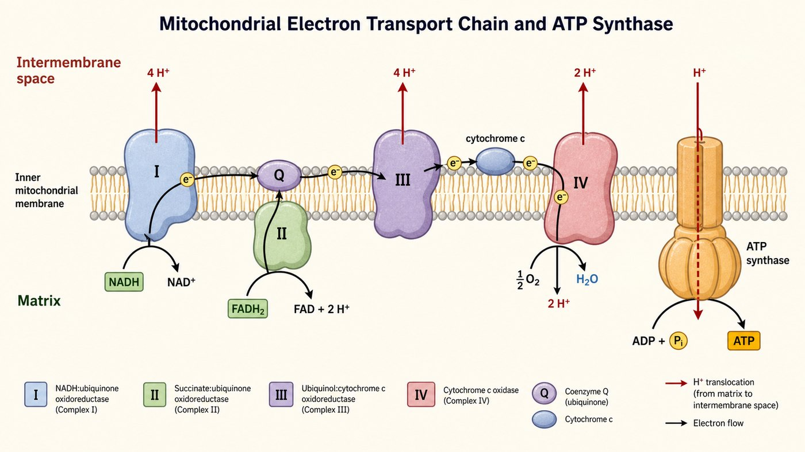
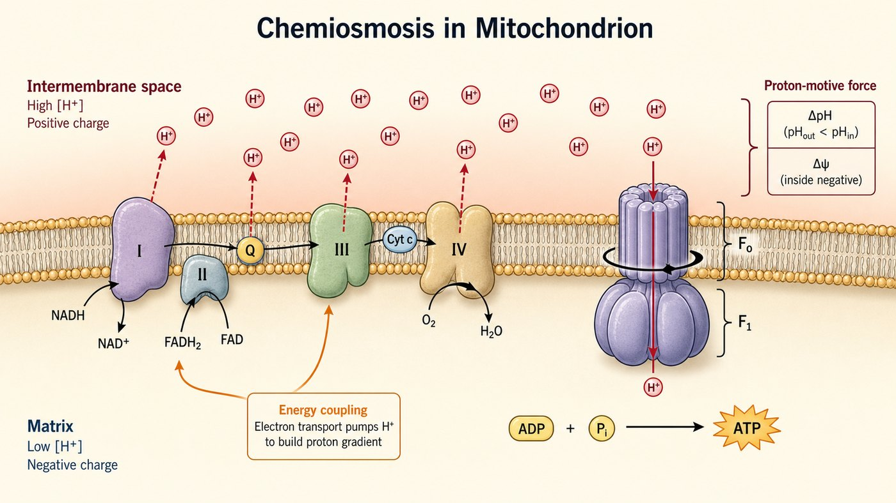

第 15 週
與電子傳遞鏈
Phosphoryl hóa oxy hóa
Cuối cùng cũng phát điện
真正的 ATP,大部分在這裡才產生。
Phần lớn ATP thật sự được tạo ra ở đây.
Từ vựng · 不用背,看過就好
| 中文 | Tiếng Việt | English | 中文 | Tiếng Việt | English |
|---|---|---|---|---|---|
| 氧化磷酸化 | Phosphoryl hóa oxy hóa | OxPhos | 化學滲透 | Thẩm thấu hóa học | Chemiosmosis |
| 電子傳遞鏈 | Chuỗi vận chuyển điện tử | ETC | ATP合成酶 | ATP synthase | ATP synthase |
| 複合體 | Phức hợp | Complex | 解偶聯劑 | Chất tách cặp | Uncoupler |
| 質子梯度 | Gradient proton | Proton gradient | 氰化物 | Cyanide | Cyanide |
| 泛醌 | Ubiquinone | Q | 細胞色素c | Cytochrome c | Cyt c |
Chuỗi vận chuyển điện tử

Tiếp sức electron: I/II → Q → III → cyt c → IV → oxy (thành nước).
Chuyển tiếp electron: I/II → Q → III → cyt c → IV → oxy (thành nước).
Complex II KHÔNG bơm proton
因為 FADH₂ 從複合體 II 進來,少經過一個泵。
Thẩm thấu hóa học

質子泵到膜間隙(蓄水)→ 流回時經 ATP 合成酶(水閘)→ 做 ATP。
Bơm proton (tích nước) → chảy về qua ATP synthase → tạo ATP.
Gradient tuần 10, dùng ngược
鈉鉀幫浦「建立」梯度。
Tuần 10: tạo gradient
ATP 合成酶「用」梯度。
Tuần này: dùng gradient
Vì sao cyanide gây chết
在膜上打洞 → 質子漏光 → 燒燃料但做不出 ATP → 發熱。有種減肥藥(DNP)就是,很多人熱死。
Chất tách cặp: đục màng → sinh nhiệt
Tổng: 1 glucose
| 階段 | 產物 |
|---|---|
| 糖解 | 2 ATP + 2 NADH |
| 丙酮酸→乙醯CoA | 2 NADH |
| 檸檬酸循環 | 6 NADH + 2 FADH₂ + 2 GTP |
| 總計 | 約 30–32 ATP |
Bài tập: Sắp xếp
電子最後給誰?為什麼要呼吸? Electron cuối cùng cho ai?
Vì sao phải hô hấp?
Bài tập: Đúng hay sai
複合體 II 會泵質子。
Phức hợp II bơm proton.
氧氣是最終電子接受者。
Oxy là chất nhận điện tử cuối cùng.
ATP 合成酶靠質子流動來運轉。
ATP synthase hoạt động nhờ dòng proton.
氰化物擋住複合體 IV。
Cyanide chặn phức hợp IV.
想一想:膜破洞讓質子漏光,還能做 ATP 嗎?
Suy nghĩ: nếu proton rò hết qua lỗ thủng màng, còn tạo được ATP không?
下週 · Tuần sau
Chuyển hóa acid béo & amino acid
▶ 課前:看詞彙表第 16 週(17 個詞)
Xem trước 17 từ của tuần 16
▶ 小測:下週前 10 分鐘,考今天的詞
Kiểm tra 5 câu
▶ 提示:除了葡萄糖,脂肪也能燒
Gợi ý: không chỉ glucose, mỡ cũng đốt được